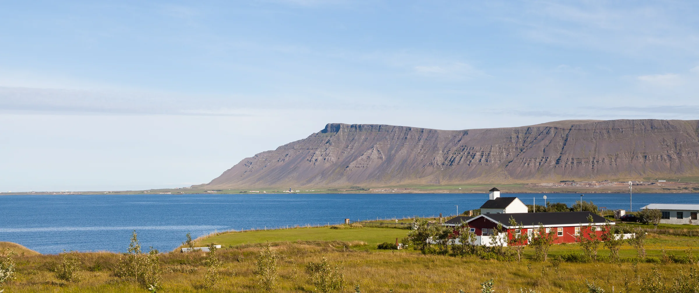
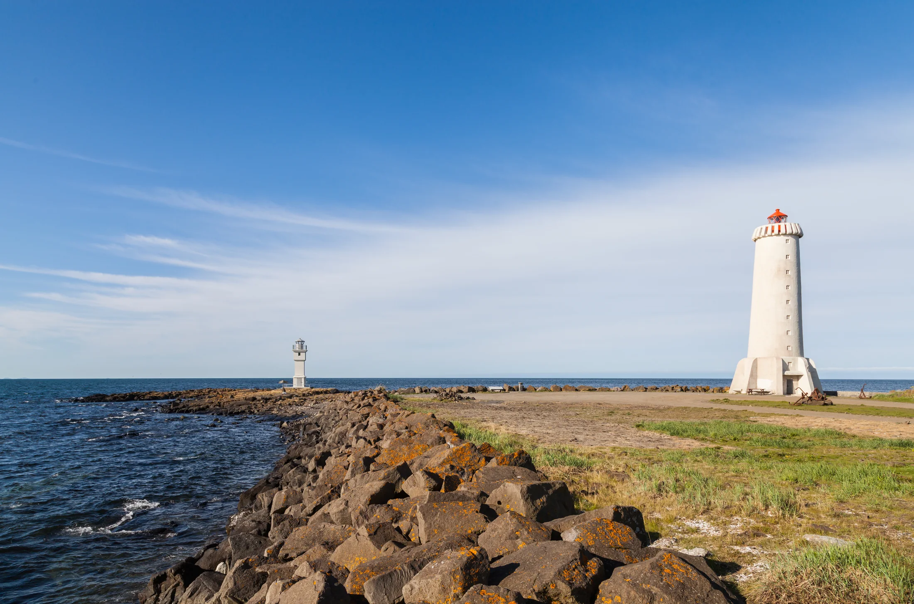

Kaup, sala, leiga og samningagerð vegna fasteigna, fyrir einstaklinga jafnt sem fyrirtæki.

Fastur punktur þegar mest á reynir
Lögfræðiþjónusta á Akranesi
Lögfræðiþjónusta Akraness sinnir fasteignamálum, fjölskyldumálum, samningum, skaðabótum, vinnurétti og fyrirtækjarekstri fyrir einstaklinga og fyrirtæki á Akranesi og nágrenni. Baldvin Már Kristjánsson héraðsdómslögmaður rekur stofuna.
Akranes · Vesturland
Héraðsdómslögmaður
Baldvin Már Kristjánsson
Baldvin hefur tekið við rekstri Lögfræðiþjónustu Akraness, sem hefur starfað á Akranesi frá 2011, og sinnir lögfræðiþjónustu fyrir einstaklinga og fyrirtæki á Akranesi og nágrenni.
Hann lauk grunnnámi í lögfræði við Háskólann í Reykjavík árið 2017 og meistaranámi við Háskólann í Lundi í Svíþjóð árið 2019. Meðfram og eftir nám starfaði hann hjá Lögheimtunni, Arion banka og hjá NJORD Law Firm í Kaupmannahöfn.
2017BA í lögfræði, Háskólinn í Reykjavík
2019Meistaranám í lögfræði, Háskólinn í Lundi
ReynslaLögheimtan · Arion banki · NJORD Law Firm, Kaupmannahöfn
SviðAlhliða lögfræðiþjónusta fyrir einstaklinga og fyrirtæki
Þjónusta
Alhliða lögfræðiþjónusta
Stofan tekur að sér mál einstaklinga og fyrirtækja á Akranesi og nágrenni. Hvert sem málið er byrjar það á sama stað: samtali sem kostar ekkert.
Skipti dánarbúa, erfðaskrár og fjölskyldumál fyrir einstaklinga og fjölskyldur.
Samningagerð, ágreiningsmál og innheimta krafna fyrir einstaklinga og fyrirtæki.
Mat á bótarétti og ágreiningur um tjón og vátryggingar.
Ráðningarsamningar, uppsagnir og ágreiningur á vinnumarkaði.
Stofnun félaga, hluthafasamningar og lögfræðileg ráðgjöf fyrir fyrirtæki.
Auk þess almenn lögfræðiráðgjöf fyrir einstaklinga og minni fyrirtæki. Ef málið þitt fellur ekki hreint undir neinn af þessum flokkum skaltu samt hafa samband.
Ferlið
Við sjáum um flækjuna
01
Fyrsta samtal
Þú lýsir málinu. Við metum stöðuna og næstu skref saman. Samtalið kostar ekkert.
02
Gagnaöflun
Við öflum þeirra gagna sem málið krefst og förum yfir réttarstöðuna í hverju tilviki.
03
Málið unnið
Samið, sótt eða varið, eftir því hvað málið krefst, og fylgt eftir þar til niðurstaða liggur fyrir.
04
Niðurstaða
Farið er yfir niðurstöðuna með þér áður en gengið er frá málinu, svo þú vitir nákvæmlega hvað þú ert að samþykkja.

Lögmannsstofa með rætur á Akranesi síðan 2011
Algengar spurningar
Það sem fólk spyr oftast um
Hvað kostar að fá lögmann í mitt mál?
Fyrsta samtalið er alltaf endurgjaldslaust, hvert sem málið er. Eftir það er unnið samkvæmt tímagjaldi, 16.000 kr. án virðisaukaskatts.
Er fyrsta samtalið skuldbindandi?
Nei. Þú færð hreinskilið mat á stöðunni og ræður svo hvort lengra er haldið.
Hvers konar mál tekur stofan að sér?
Fasteignamál, fjölskyldumál, samningagerð, skaðabótamál, vinnuréttarmál, félagaréttarmál og almenn lögfræðiráðgjöf fyrir einstaklinga og fyrirtæki. Passar málið þitt ekki fullkomlega í einn af þessum flokkum, hafðu samt samband.
Þarf ég að koma til Akraness til að hitta þig?
Nei. Fyrstu samskipti fara oftast fram í síma eða tölvupósti, og mál eru unnin fyrir fólk og fyrirtæki hvar sem er á landinu.
Hvenær á ég að hafa samband?
Eins fljótt og hægt er. Því fyrr sem staðan er skoðuð, því betur er málið upplýst. Fyrsta samtalið skuldbindur þig ekki til neins.
Er stofan bara fyrir fólk á Akranesi?
Nei. Stofan er á Akranesi og hefur þjónað Akurnesingum og nágrenni frá 2011, en mál eru unnin fyrir fólk og fyrirtæki hvar sem er á landinu.
Hafa samband
Segðu okkur frá málinu þínu
Fyrsta samtalið kostar ekkert og skuldbindur þig ekki til neins.
Sími857 8660
Netfangbaldvin@delikt.is
OpnunartímiVirka daga 9 til 16
HeimilisfangGarðabraut 33, Akranes